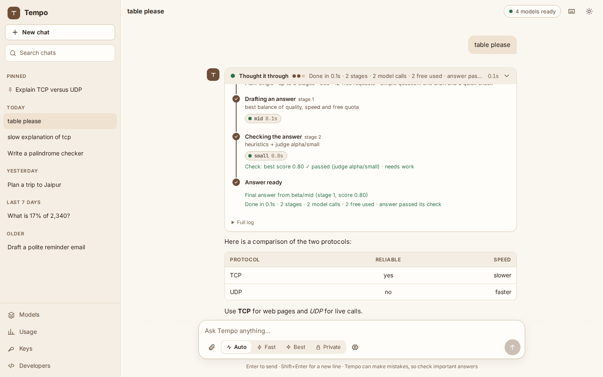
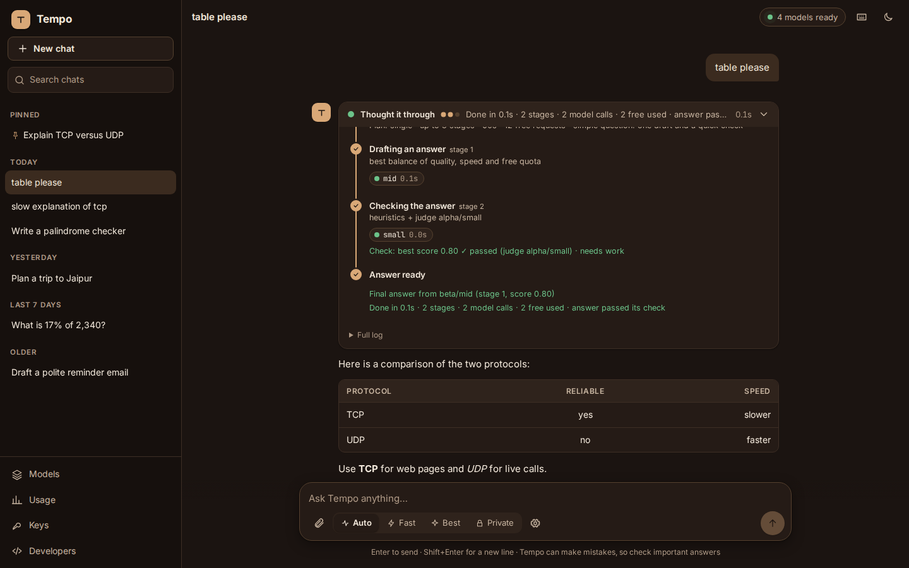
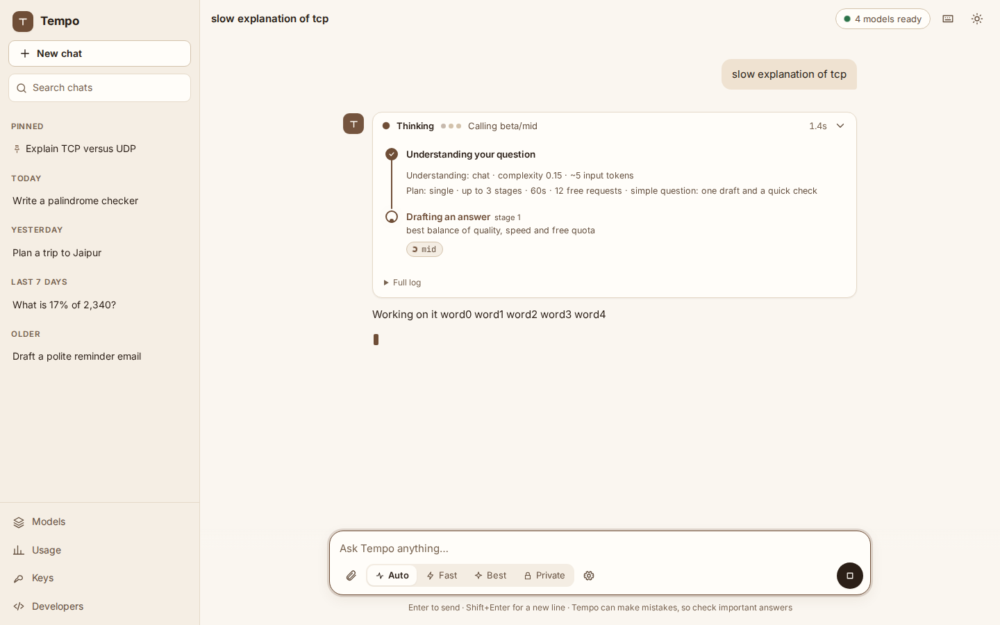
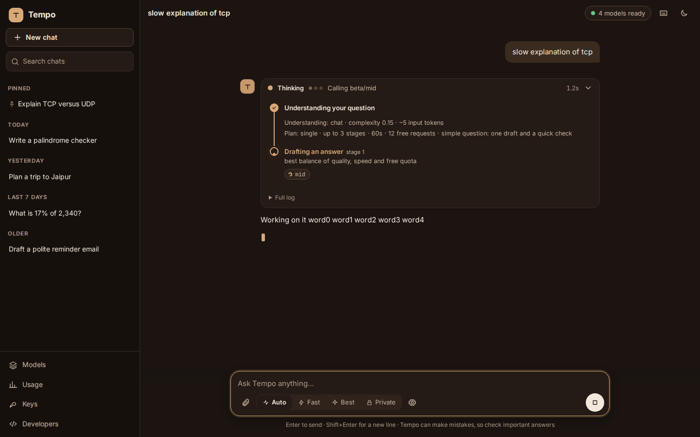
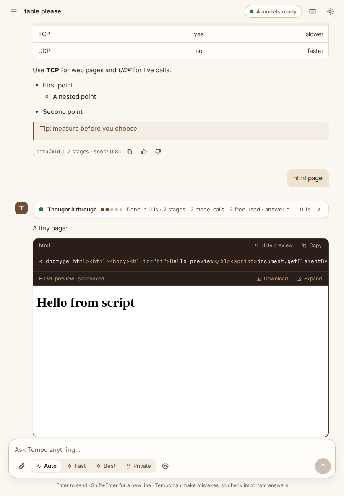
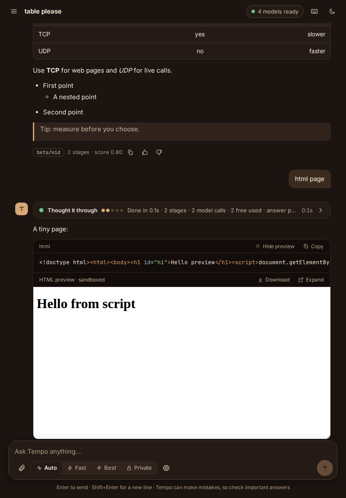
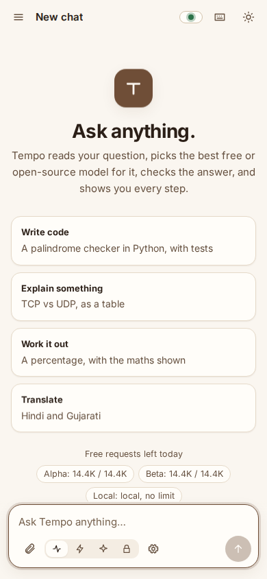
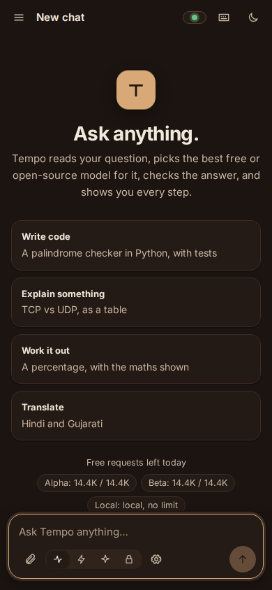

Ask once. Tempo picks the best free model.
Tempo-server is open models plus the system that runs and trains them. It routes every question to the best free or open model you have, checks the answer with a second model, fixes it when it's weak, and shows every step. It runs on an ordinary computer, with your own free keys, and speaks the OpenAI API.


A web app that shows its work
Run tempo-server serve and open it in any browser: a warm white-and-brown theme (or dark brown), your past chats on the left, and a thinking window that lights up each stage as Tempo works. Everything is bundled, so it works offline with Ollama.






What it does
Install
# one line: installs uv if needed, then Tempo-server, then runs the setup
curl -LsSf https://raw.githubusercontent.com/narendrachampaneri/Tempo-server/main/install.sh | sh
# or with a tool you already have
pipx install tempo-server # or: uv tool install tempo-server# PowerShell, one line: installs uv if needed, then Tempo-server, then runs the setup
powershell -ExecutionPolicy ByPass -c "irm https://raw.githubusercontent.com/narendrachampaneri/Tempo-server/main/install.ps1 | iex"
# or with a tool you already have
pipx install tempo-server # or: uv tool install tempo-serverdocker run -it --rm -v tempo-data:/data ghcr.io/narendrachampaneri/tempo-server setup
docker run -d -p 127.0.0.1:8000:8000 -v tempo-data:/data ghcr.io/narendrachampaneri/tempo-serverThe image is published with the first release; until then, build it from the repository (see the README).
Before the first PyPI release, install from GitHub with the same tools: pipx install https://github.com/narendrachampaneri/Tempo-server/archive/refs/heads/main.zip (the one-line installers already do). Your data stays on your computer, in the system's app-data folder.
Then, in under five minutes
tempo-server setup: for each free provider, where to get the key, its free limits and terms. Keys are checked, stored encrypted and never shown again.tempo-server serve: the web app on http://127.0.0.1:8000 and the API on/v1.- Connect an app: base URL
http://localhost:8000/v1, modeltempo/auto. - Anything wrong?
tempo-server doctorchecks everything and says how to fix it.
Demo
A recorded session, replayed in your browser: the thinking window, every stage and the final answer. Open it full size.
Use it from any OpenAI client
from openai import OpenAI
client = OpenAI(base_url="http://localhost:8000/v1", api_key="local")
reply = client.chat.completions.create(
model="tempo/auto", messages=[{"role": "user", "content": "Hello!"}]
)
print(reply.choices[0].message.content)Step-by-step for Open WebUI, LibreChat, Continue, Aider, OpenCode, n8n and LangChain: CONNECT.md.